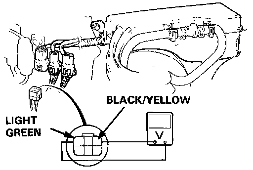
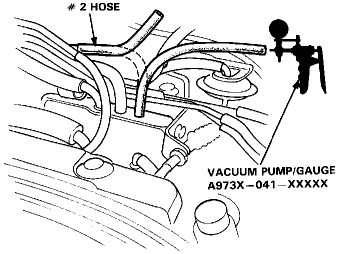
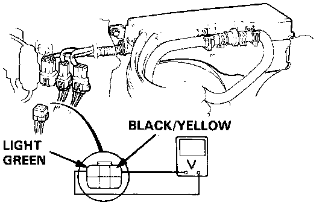

Sedan
PRESSURE REGULATOR SOLENOID VALVE TESTSTest I:
NOTE:
- Engine coolant temperature must be above 105°C (221°F).
- Intake air temperature must be above 80°C (176°F).

1. Disconnect 6P connector, then attach the positive probe of the voltmeter to Black/Yellow terminal and the negative probe to Light green terminal.
- If there is voltage, replace the solenoid valve and re-test.
- If there is no voltage attach the positive probe of the voltmeter to Black/Yellow terminal and the negative probe to body ground within one minute after restart.
- If there is no voltage, repair open circuit in Black/Yellow wire between the solenoid valve and No. 11 fuse.
- If there is voltage, inspect open in Light green wire between the solenoid valve and the ECU. If wire is OK, see Electronic Control System troubleshooting.
Test II:
1. Start the engine.

2. Disconnect the #2 vacuum hose from the intake manifold and check the vacuum.
- If there is no vacuum, check the vacuum port.
- If there is vacuum, check the vacuum line for proper connection, cracks, blockage or disconnected hose. If the vacuum line is OK, re-connect the #2 vacuum hose.
3. Disconnect the 6p connector.

4. Attach the positive probe of the voltmeter to Black/Yellow terminal and the negative probe to Light green terminal.
- If there is voltage, inspect short in Light green wire between the solenoid valve and ECU. If wire is OK, see ECU troubleshooting.
- If there is no voltage, replace the solenoid valve and re-test.